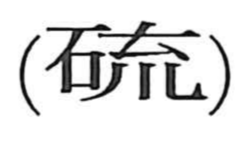

硫

Kun: | On: ryu
sulfur
Explanation
A phono-semantic graph: the left component 石 marks a mineral or stone, while the right side is an abbreviated form of 流, which provides the on reading ryu. The character names sulfur (硫黄), a yellow, odorless, brittle crystal long employed not only in gunpowder and matches but also in medicine.